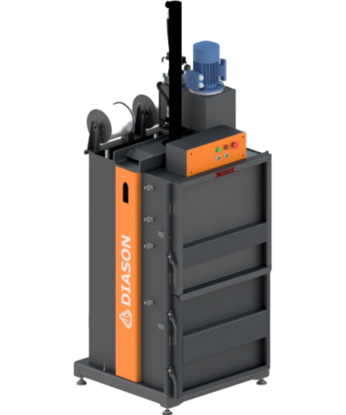
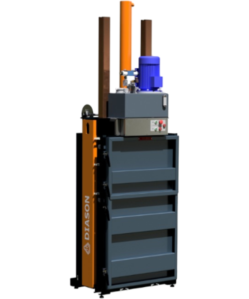
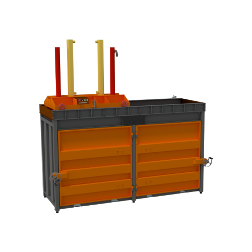
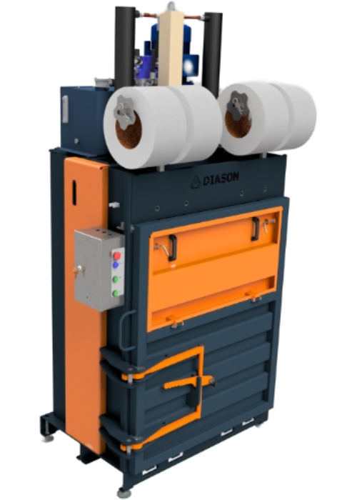
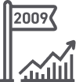

Гідравлічні преси для макулатури та твердих побутових відходів
З 2009 року наша компанія є одним з найбільших виробників вантажопідйомного обладнання на ринку України. Ми розробляємо, виробляємо, встановлюємо, модернізуємо і обслуговуємо вантажопідйомне обладнання.
Контроль якості – один з головних принципів виробництва вантажопідйомного обладнання на нашому підприємстві
-

Гідравлічний прес міні
Компактний прес, який дозволить закрити потреби невеликого підприємства: компактного супермаркету, магазину, невеликого складу, ресторану та готелю.
4 т
від 133 000 грн
Детальніше -

Гідравлічний прес 10 т
Універальний прес, що може працювати з більшістю типів вторсировини. Закриє потреби середніх за розміром супермаркетів, великих магазинів, промисловилових підприємств з невеликим обсягом сировини.
10 т
від 154 000 грн
Детальніше -

Гідравлічний прес 15 т
Прес з двома камерами, що дозволяє сортувати вторсировину за типами. Підходить для підприємств будь-якого масштабу.
15 т
від 295 000 грн
Детальніше -

Гідравлічний прес 20 т
Прес, що може працювати з будь-якими типами вторсировини та закриє потреби супермаркету, масштабного магазину, великого промислового підприємтва тощо.
20 т
від 245 000 грн
Детальніше
Наші переваги
-
Сучасний виробничий комплекс
-
Власне конструкторське бюро
-

На ринку з 2009 року